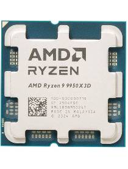
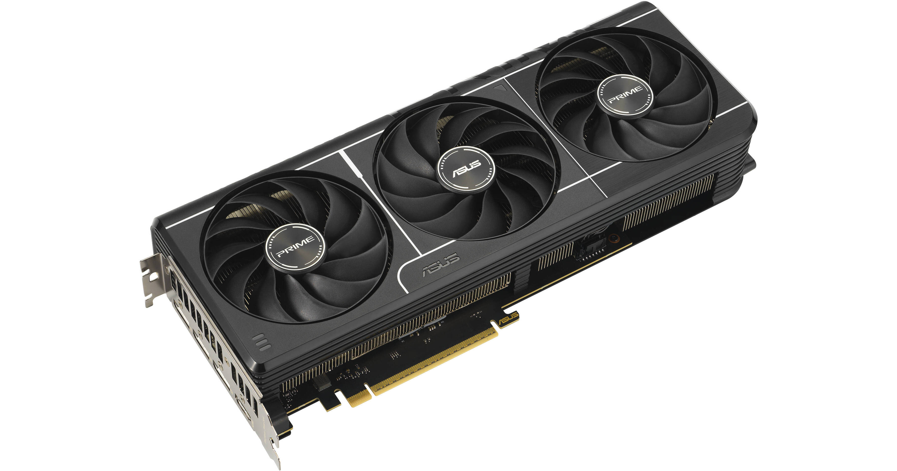
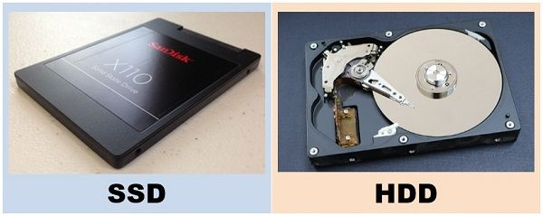
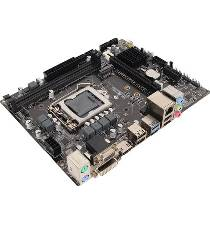
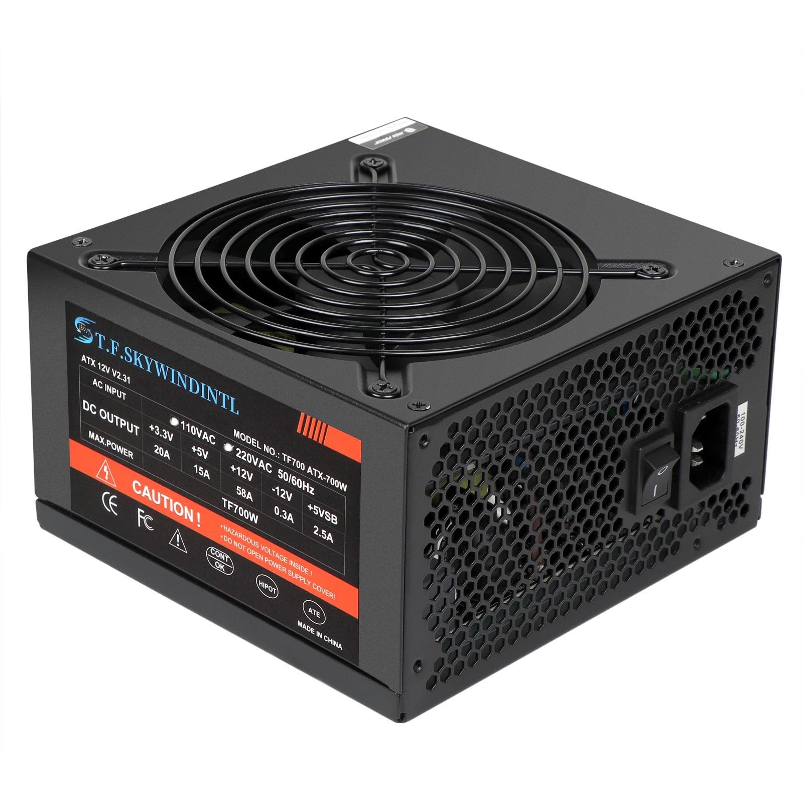

Central Processing Unit (CPU)
The CPU is often referred to as the "brain" of the computer, it is build upon multiple circuits and is responsible for executing instructions and performing calculations. It consists of multiple cores that allow for multitasking and improved performance. The CPU's clock speed, measured in gigahertz (GHz), determines how quickly it can process instructions. Additionally, the CPU's architecture, such as x86 or ARM, can impact its compatibility with software and overall performance. CPUs also have threads, which are the smallest sequence of programmed instructions that can be managed independently by a scheduler. The number of threads a CPU can handle can impact its ability to perform multiple tasks simultaneously, with higher thread counts generally providing better multitasking performance.
Graphics Processing Unit (GPU)
The GPU is a specialized processor designed to handle graphics rendering and parallel processing tasks. It is essential for tasks such as gaming, video editing, and 3D modeling. GPUs have evolved to support advanced features like ray tracing and AI-based rendering, enhancing visual quality and performance in modern applications. The GPU's performance is often measured in terms of its core count, clock speed, and memory bandwidth, which contribute to its ability to handle complex graphical workloads. There is subtle difference between integrated and dedicated GPUs. Integrated GPUs are built into the CPU and share system memory, while dedicated GPUs have their own memory and processing power, providing better performance for graphics-intensive tasks.
Random Access Memory (RAM)

RAM is a type of volatile memory (meaning, it loses its data when the power is turned off) that provides temporary storage for data and instructions that the CPU needs to access quickly. It allows for faster data retrieval compared to storage devices like hard drives or solid-state drives (SSDs). The amount of RAM in a computer can significantly impact its performance, especially when running multiple applications or handling large files. Modern computers typically come with varying amounts of RAM, ranging from 4GB to 64GB or more, depending on the intended use case. Additonally, its performance can be influenced by something called Dual Channel Memory, which allows for increased data transfer rates by utilizing two memory channels simultaneously. This can lead to improved performance in tasks that require high memory bandwidth, such as gaming and video editing Latly, the speed of the RAM, measured in megahertz (MHz), can also impact performance, with higher speeds generally providing better performance in memory-intensive tasks.
Storage Devices
Storage devices are essential for storing data and applications on a computer. The two main types of storage devices are hard disk drives (HDDs) and solid-state drives (SSDs). HDDs use spinning disks to read and write data, while SSDs use flash memory, which allows for faster data access and improved performance. SSDs have become increasingly popular in modern computers due to their speed and reliability, although they tend to be more expensive than HDDs. Additionally, there are other storage options such as hybrid drives, which combine the speed of an SSD with the larger capacity of an HDD, and external storage devices like USB flash drives and external hard drives for additional storage capacity. Fun fact: the reason why your computer main storage is called "C Drive" is because in the early days of computing, the first two drives were typically reserved for floppy disks (A and B), and the main hard drive was designated as C.
Motherboard
The motherboard is the main circuit board that connects all the components of a computer together. It provides the necessary connections and interfaces for the CPU, GPU, RAM, storage devices, and other peripherals to communicate with each other. The motherboard also contains various slots and ports for expansion cards, such as graphics cards and sound cards, as well as USB ports, audio jacks, and network interfaces. The quality and features of the motherboard can impact the overall performance and capabilities of a computer, making it an important consideration when building or upgrading a PC.
Power Supply Unit (PSU)
The PSU is responsible for providing power to all the components of a computer. It converts the alternating current (AC) from the wall outlet into direct current (DC) that the computer can use. The wattage of the PSU determines how much power it can provide, and it is important to choose a PSU that can adequately support the power requirements of the components in a computer. A high-quality PSU can help ensure stable and reliable performance, while a low-quality or underpowered PSU can lead to system instability and potential damage to components.